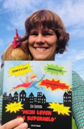

Over mij
Hoi, ik ben Liv. Ik woon samen met 5 superhelden, 4 kleinere en 1 grotere. Verhalen verzin ik al vanaf ik oud genoeg was om ze te bedenken. Ooit had ik de hele klas overtuigd dat er een spook in mijn straat woonde, een echt, niet zo’n mietje met een laken.
Al heel mijn leven droom ik ervan om kinderboeken te schrijven. ‘Mijn leven als superheld’ is mijn eerste of toch het eerste dat je echt kan lezen op papier.
Naast schrijven houd ik ook veel van de natuur. Vroeger van kampen bouwen, in de bomen klimmen en waanzinnige avonturen beleven of verzinnen samen met leeftijdsgenootjes. Nu van gewoon buiten zijn in de tuin of een bos, bezig zijn met mijn dieren, genieten van de geuren en kleuren en nog steeds waanzinnige verhalen verzinnen.
Ik ben ervan overtuigd dat spelen in de natuur een geweldige manier is om kinderen tot rust te laten komen maar tegelijk ook te prikkelen in hun fantasie, te stimuleren in hun oplossingsvaardigheden, weerbaarheid en nog veel meer goeds en het geeft vooral heel veel onversneden speelpret!